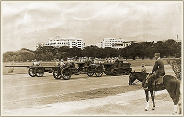

|
j
a v a s c r i p t |
June 4, 1942 — "Negros Occupied"
A supplement shows pictures of the military parade with Homma sitting on a big horse with three white hooves. I managed to dig up an eyewitness who was impressed by the number of tanks the Japanese displayed — "possibly more than 250." Spectators at Avenida Rizal were mostly bystanders.

Homma Victory Parade
Ma received a phone call this morning; a man's voice said, "Please send someone over to this address; we have a message for you from Joe." Maurice went and retrieved a small, crumpled scrap of paper with Joe's handwriting. "Dear Mother," he wrote, "I am all right. Lots of love to everybody, Joe." That's it — the first communication we've had from him since December 30. One of a working party of O'Donnell prisoners dropped a small package of messages near a Filipino civilian at Capas. The civilian picked it up, saw the messages and passed it to someone going to Manila. The traveler delivered it to one address, and from there the various messages were distributed. |
|
|
|
|